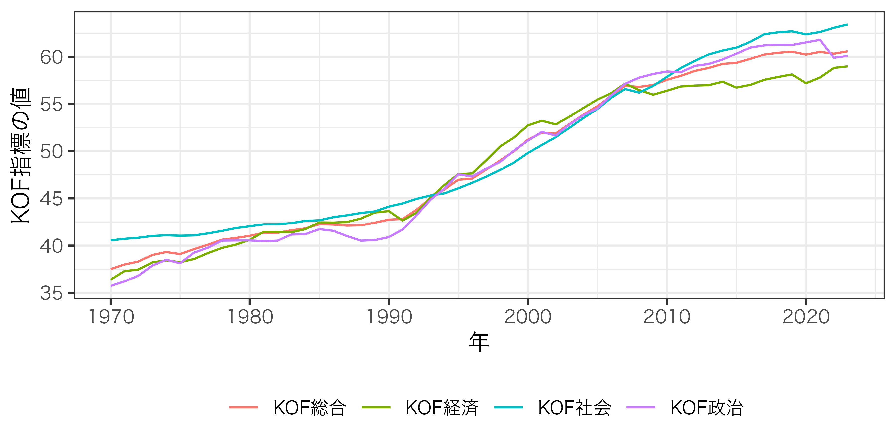
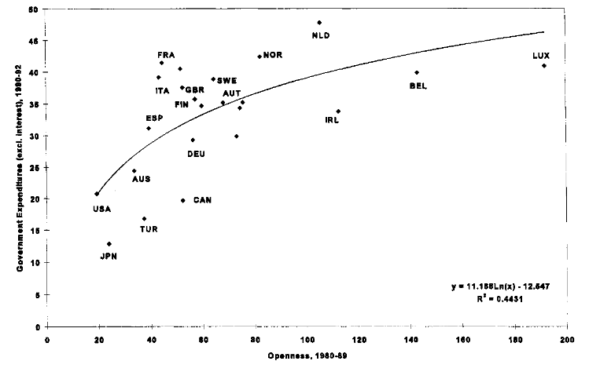
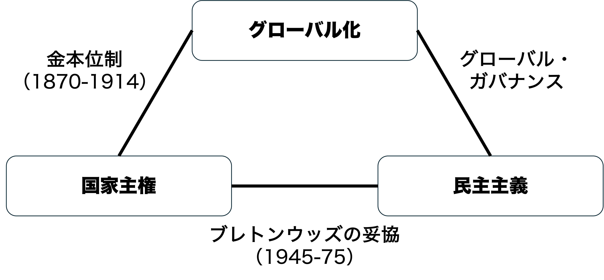

04/戦後体制の再編とグローバル化
比較政治経済分析
2026-10-26
今日の目次
- はじめに
- 戦後体制の再編
- グローバル化の概念と現状
- グローバル化と国内政治
- グローバル化と民主主義
- まとめ
はじめに
先週のRP
TBD
本日の目的と到達目標
目的
戦後政治経済体制が1970年代以降どのように変容してきたのか主要な要因を学ぶとともに、特にグローバル化の影響を詳しく検討する。グローバル化の現状をデータに基づいて概観したのち、グローバル化が政治に与える影響を考察する。
到達目標
- 1970年代に戦後体制が直面した国際・国内的な再編圧力を挙げ、説明できる。
- KOF Globalization Idexに基づいてグローバル化の現状を描写できる。
- グローバル化が国内政治に与える影響について、収斂仮説と分岐仮説を対比できる。
- 世界経済のトリレンマの見地からグローバル化と民主主義の関係を議論できる。
戦後体制の再編
Think-pair-share（-10分）
先週は戦後政治経済体制について学びましたが、改めて戦後体制とはどのような体制だったかを思い出してください。
戦後体制の変化
1960年代以降の国際的・国内的変化が70年代に顕在化し、戦後体制は再編へ向かう
- 国際的な変化…アメリカの（相対的）衰退
- アメリカの他国に対する優位が失われる
- 「覇権による安定」の前提が崩壊
- 国内的な変化…ケインズ主義の前提崩壊
- ケインズ主義では説明できない現象
- 新しい経済学のパラダイムの登場
アメリカの衰退
1960年代〜 経常赤字→ドル信用低下
- ベトナム戦争の長期化
- 旧敗戦国の経済復興
- 国内福祉の拡大
1971年8月15日 ニクソン・ショック
- 金ドルの交換一時停止の宣言
- 以降なし崩し的に変動相場制へ

ケインズ主義への疑念
スタグフレーション (stagflation)…低成長と高インフレの同時発生
- サービス産業移行による生産性向上の鈍化
- 高賃金・高福祉による物価高→オイルショック（1973年）による拍車
ケインズ主義の前提としてのフィリップス曲線
- 失業とインフレのトレードオフ
- 高失業低インフレor低失業高インフレ
- 裁量的財政・金融政策による調整
マネタリズムと新自由主義改革
- 貨幣供給量を一定に保つための政府支出削減
グローバル化の概念と現状
グローバル化（globalization）
国境を超えた社会的経済的な結びつき
コヘインとナイの3次元1：
- 経済のグローバル化…モノ・資本・サービス、市場交換に関する情報・認識の長距離移動
- 政治のグローバル化…政府の政策の拡散
- 社会のグローバル化…アイデア、情報、イメージ、人々の移動
KOF Globalisation Index
ETH Zurich KOFが提供する、各国各年のグローバル化の程度を操作化した指標1 2
| 実質（de facto） | 法的（de jure） | |
|---|---|---|
| 経済 | 財サービス貿易、FDIなど | 貿易規制、投資規制など |
| 社会 | 移民、インターネット接続、文化財貿易など | 旅行の自由、ネット接続、ジェンダー平等など |
| 政治 | 大使館数、国際NGO数など | 国際機関加盟数、国際条約数など |
KOF Indexの平均の推移
Q. このグラフから何が読み取れる？（わせポチ）
グローバル化と国内政治
収斂仮説
グローバル化は各国の政治経済のあり方を均質化させるという仮説
- 底辺への競争…産業の空洞化を防ぐために、税や社会保障の引き下げや規制緩和
- 労使関係の変化…移動できない労働者vs.移動できる企業→労働条件の悪化
- ワークフェア競争国家…福祉受給に就労を条件づけて国際競争に勝とうとする国のあり方
法人税率の推移
分岐仮説
グローバル化への対応は国家によって異なるとする仮説
- 補償仮説…グローバル化の悪影響を緩和するためにむしろ福祉は充実する
- 企業・投資家の利益…格差縮小による治安の安定やインフラの充実は企業誘致に有利
- ポスト工業化…労働市場の変化は産業構造変化によるもの
補償仮説
福祉が発達した北欧は国際貿易に強く依存する小国であるという観察（小国仮説）
ダニ・ロドリック「貿易開放性が高い国々で政府支出が大きい」1

アンケート
ここまでの話を聞いて、収斂仮説と分岐仮説どちらが説得力が高いと思いますか？（わせポチ）
グローバル化と民主主義
世界経済のトリレンマ

出典：教科書p.45
ワーク
教科書p.46以降から排外主義の台頭の原因について議論されています。確認の上、自分の言葉でまとめてください。
右派ポピュリズム政党
排外主義とポピュリズム的主張を組み合わせた右派ポピュリズム政党の台頭
- ポピュリズム…腐敗したエリートと善良なる大衆の二項対立
- 例：ドイツのための選択肢（AfD）、リフォームUK、フランス国民連合
台頭の要因をめぐる言説…取り残された労働者・低所得層の支持？
- 民主主義の赤字…多元化した権力（特に国際機関）に対する民主的統制の欠如
- エレファント・カーブ…停滞する先進国中間層の所得
比較政治学の知見
右派ポピュリズム政党の台頭は経済だけでは説明できない
- 所得や満足度との相関はない
- 価値観や認識の重要性
- 伝統文化志向
- 命令・規則への服従志向
- 移民に対する文化的・経済的脅威認識
- 高齢・白人・地方在住者の高い支持

まとめ
本日の目的と到達目標
目的
戦後政治経済体制が1970年代以降どのように変容してきたのか主要な要因を学ぶとともに、特にグローバル化の影響を詳しく検討する。グローバル化の現状をデータに基づいて概観したのち、グローバル化が政治に与える影響を考察する。
到達目標
- 1970年代に戦後体制が直面した国際・国内的な再編圧力を挙げ、説明できる。
- KOF Globalization Idexに基づいてグローバル化の現状を描写できる。
- グローバル化が国内政治に与える影響について、収斂仮説と分岐仮説を対比できる。
- 世界経済のトリレンマの見地からグローバル化と民主主義の関係を議論できる。
次回までに
事前学習
- 教科書（第3章）を読む。
事後学習
- 授業資料を見直し、目標到達をセルフチェック
- Moodle上でのリアクションペーパー入力（木曜日まで）
戦後体制の再編とグローバル化